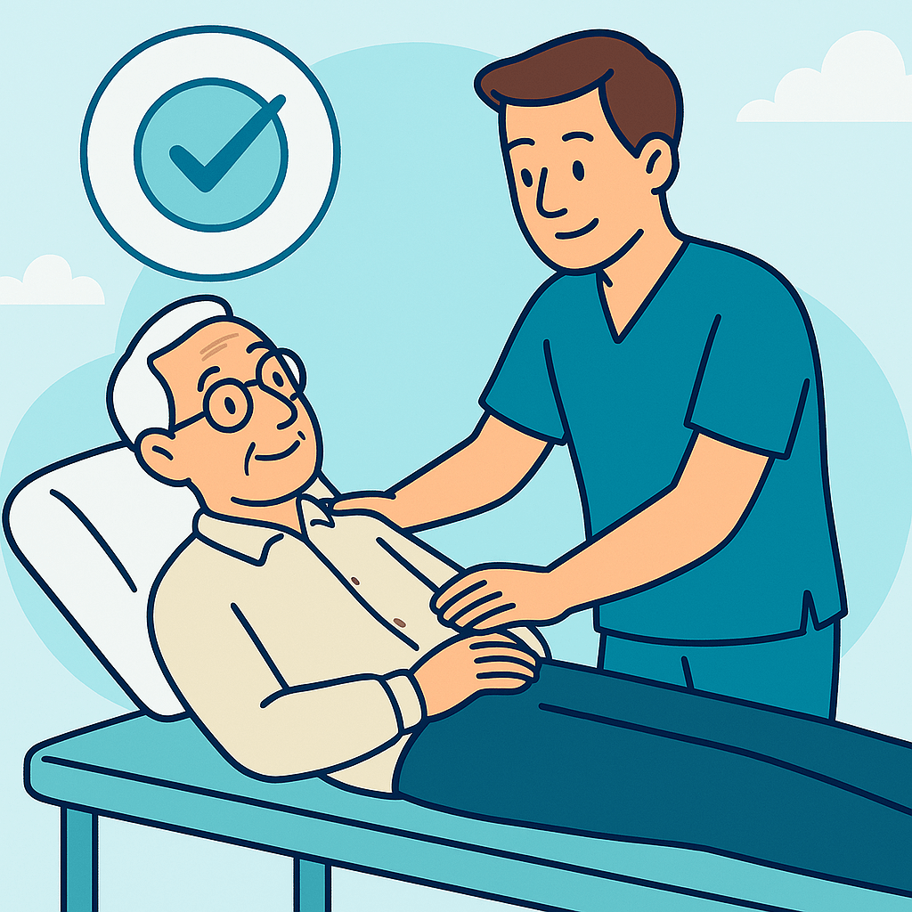

Fisioterapia Geriátrica
¿Qué es la Fisioterapia Geriátrica?
La fisioterapia geriátrica es una especialidad enfocada en el cuidado y tratamiento de personas mayores. Con el paso del tiempo, es normal que aparezcan ciertas limitaciones físicas: dificultad para caminar, pérdida de fuerza, dolores articulares o incluso miedo a caerse. Nuestro objetivo es ayudar a que cada persona mantenga su independencia, se sienta segura y, sobre todo, que disfrute de una buena calidad de vida.
¿En qué consiste la Fisioterapia Geriátrica?
A través de sesiones personalizadas y con un enfoque amable y respetuoso, trabajamos para mejorar la movilidad, reducir el dolor y aumentar la autonomía. Cada tratamiento se adapta a las capacidades y necesidades de la persona mayor, siempre teniendo en cuenta su historia médica, su ritmo y sus objetivos.
- Ejercicios de fortalecimiento: Para evitar la pérdida de masa muscular (sarcopenia) y facilitar las actividades diarias.
- Reeducación del equilibrio: Fundamental para prevenir caídas y aumentar la seguridad al caminar.
- Terapias para el dolor: Técnicas manuales, calor y movilizaciones para aliviar molestias crónicas como la artrosis.
- Entrenamiento funcional: Simulamos gestos cotidianos como levantarse de la silla o subir escaleras para fomentar la independencia.
¿Por qué es tan importante en esta etapa?
El envejecimiento no tiene por qué significar inmovilidad o dolor constante. Con una atención profesional y constante, muchas personas mayores recuperan habilidades que creían perdidas, se sienten más activas y mejoran notablemente su estado de ánimo. Además, la fisioterapia es clave para afrontar enfermedades como el Parkinson, la artrosis, secuelas de fracturas, prótesis de cadera o rodilla, e incluso para acompañar procesos oncológicos.
En nuestro equipo, cuidamos a cada persona como si fuera parte de nuestra familia. Sabemos que cada paciente tiene su historia y merece ser escuchado, acompañado y guiado en su camino hacia una vida más activa y plena. Estamos aquí para ayudarte a envejecer con dignidad, salud y movimiento.
¿Necesitas más información?
Si tienes alguna pregunta o necesitas más detalles sobre nuestros servicios, ¡no dudes en contactarnos!
Contáctanos